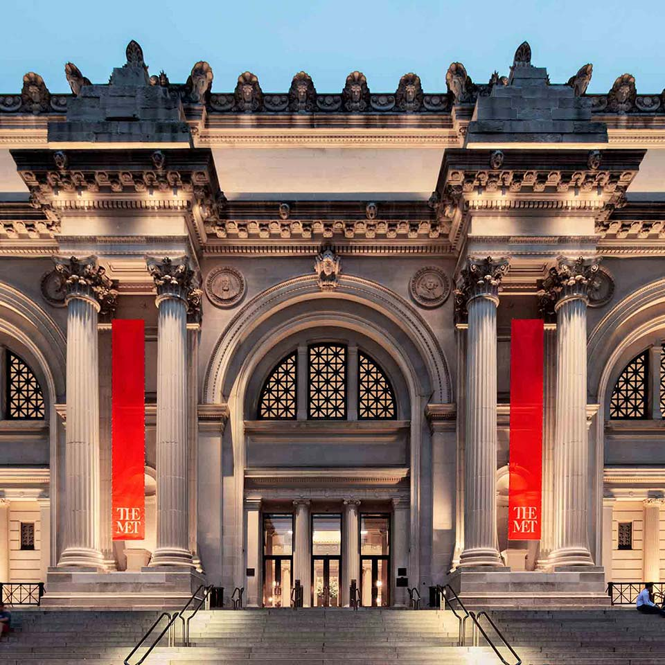

The Metropolitan Museum of Art

Art Works
Max Schmitt in a Single Scull
The Death of Socrates
Interior of Saint Peter's, Rome
Next
The Metropolitan Museum of Art of New York City, colloquially "the Met", is the largest art museum in the United States. Its permanent collection contains over 2 million works, divided among 17 curatorial departments. The main building at 1000 Fifth Avenue, along the Museum Mile on the eastern edge of Central Park in Manhattan's Upper East Side, is by area one of the world's largest art galleries. A much smaller second location, The Cloisters at Fort Tryon Park in Upper Manhattan, contains an extensive collection of art, architecture, and artifacts from medieval Europe.
Max Schmitt in a Single Scull
Next
{kind=link}
(You can click on the painting to see the larger version of it)
The course was only 3 miles long. The course was 3 miles long: beginning near Turtle Rock (Turtle Rock Light is the lighthouse at the northwest end of Boathouse Row), proceeding upriver under the Girard Avenue and Pennsylvania Railroad Connecting Bridges to a stake near the Columbia Railroad Bridge, making a 180-degree turn around the stake, and then heading downriver back to the starting line.
{kind=link}
Starting well together, Schmitt soon drew ahead followed by Street, Brossman and Lavens. When under the Girard Avenue Bridge, Brossman and Street fouled, the oars of one resting on the boat of the other. Schmitt was now three full lengths ahead. Street and Brossman again fouled in the attempt of the former to turn the eastern stake, thus crossing Brossman's bow. Schmitt had no trouble in maintaining the advantage he had gained, and won easily
The Death of Socrates

It is actually a real event!
In 399 BCE, the Athenian courts convicted the philosopher Socrates of impiety, declaring he was corrupting the youth and had failed to worship the city's gods. He was sentenced to execution by hemlock poisoning. His protégé Plato recounted in the Phaedo that Socrates did not run from nor cry over his impending demise. Instead, he treated his execution as his final lesson. Taking the poison before his students, he did so while lecturing about how he believed in the immortality of the soul, and so did not fear death.
Interior of Saint Peter's, Rome
Next Destination
Back To New York

For all its importance, St. Peter’s Basilica isn’t the official seat of the Pope. Nor is it first in rank among Rome’s basilicas. Both of those accolades go, instead, to San Giovanni in Laterano (St. John Lateran), the mother church of the Roman Catholic church. But because of the size of St. Peter’s, and its location next to the residence of the Pope, most of the Church’s most crucial ceremonies are held here instead.